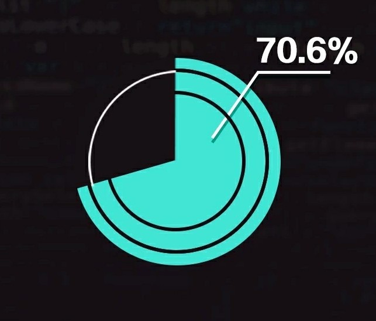
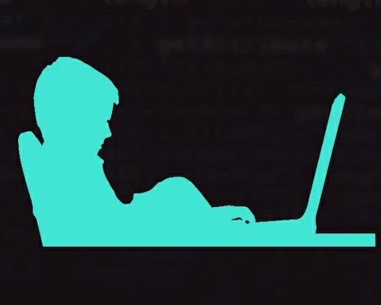
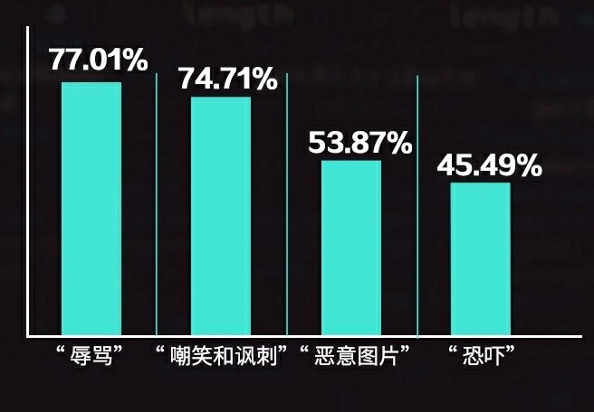
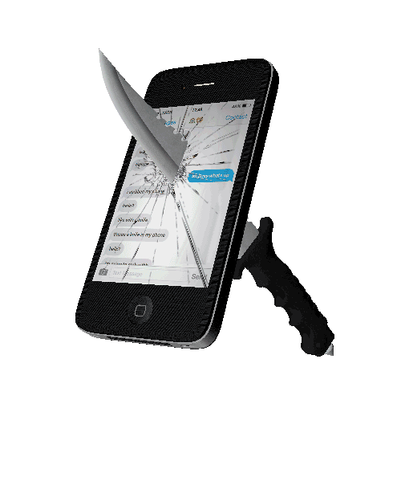
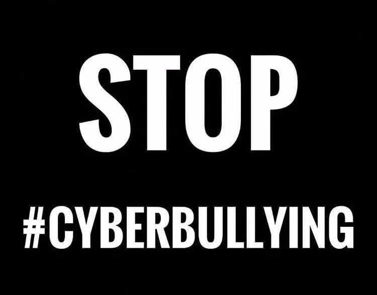
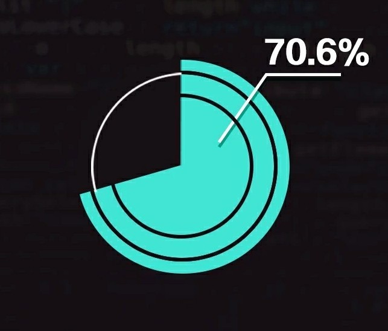
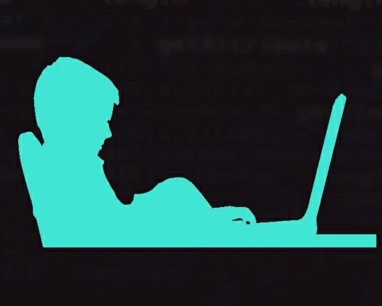
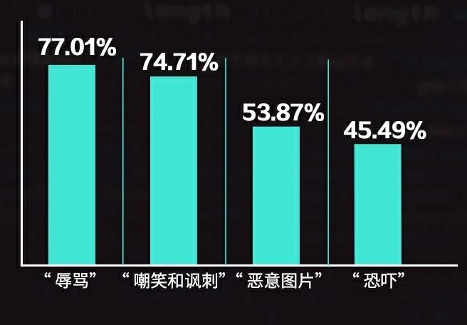

数据分析
| *调查显示，全球70.6%的15至24岁年轻网民正面临着网络暴力、欺凌和骚扰的威胁。 | *中国青少年在上网过程中遇到过暴力辱骂信息的比例达到28.89% |
|---|---|
|  |  |
| *男女遭受网暴的比例相似，但女性更容易成为网暴的受害者，比男性更有可能经历网络欺凌 | *网络暴力以“辱骂”及“嘲笑”和“讽刺”居多，分别为77.01%、和74.71%；其次“恶意图片”53.87%，和“恐吓”45.49%。 |
 |
 |
 
网站大纲
数据分析
| *调查显示，全球70.6%的15至24岁年轻网民正面临着网络暴力、欺凌和骚扰的威胁。 | *中国青少年在上网过程中遇到过暴力辱骂信息的比例达到28.89% |
|---|---|
|  |  |
| *男女遭受网暴的比例相似，但女性更容易成为网暴的受害者，比男性更有可能经历网络欺凌 | *网络暴力以“辱骂”及“嘲笑”和“讽刺”居多，分别为77.01%、和74.71%；其次“恶意图片”53.87%，和“恐吓”45.49%。 |
|
 |
新闻事件
| 王凤雅事件 | 刘鑫同名事件 | 崔雪莉自杀事件 |
|---|---|---|
| 从2018年4月作假陈岚发布微博“王凤雅疑似被亲生父母虐待致死”开始，这个时间就被贴上“诈捐”标签，这些标签将杨美芹推到了舆论风暴的中心，迎接她的是无数个电话、短信，诋毁和谩骂纷至沓来。5月24日，文章《王凤雅小朋友之死》刷爆朋友圈，与此同时网络陆续爆出”王凤雅众筹所得并未用于治病，而是给弟弟治疗兔唇“之类的言论，”重男轻女“这一敏感标签瞬间与”王凤雅事件“紧紧联系在一起。 | 演员刘鑫因与江歌案件当事人刘鑫同名，不少网友对其进行人身攻击，甚至有网友怒吼“跟刘鑫同名的肯定也不是什么好人”、“真正的刘鑫关闭评论、只能在你这骂了”、“你倒霉了。同名就是该死”。在事件之前，该演员并未在网上遭受过任何质疑与辱骂，但事件发生后，演员刘鑫就无故陷入一场网络暴力的漩涡中。 | 19年10月14日，25岁韩国艺人崔雪莉经纪人在公寓内发现雪莉死亡，向警方报案，雪莉生前一直处于风口舆论的浪尖，“行为豪放”、“no bra”、“与网友互怼”一直是她的标签，并且患有抑郁症。然而雪莉死后，无数网友纷纷在各大社交平台祭奠她，其中不乏生前骂过她的“键盘侠”，网络一度瘫痪。 |
| 19岁少年直播自杀事件 | 南京摔狗事件 | 德阳女医生自杀事件 |
|---|---|---|
| 四川省泸州县，何天蓉独自面对19岁外孙小宇的遗体，满脸悲伤。警方查明，小宇通过新浪微博直播了整个自杀过程。等警方从微博上接到网 友消息，锁定小宇位置并破门而入时，小宇已经离开了这个世界。 30日早上八点，小宇通过微博告诉大家自己决定离开，之后的更新中他晒出了买好了的安眠药、钢炭，他开始吃药、点炭，中途不停更新着自己的微博。随着小宇每更新一次微博，评论数都开始不断攀升，于是，原来关心的话语纷纷变成了恶毒的攻击，网友们纷纷开始起哄、质疑他在炒作，后来小宇发了条微博”我不想死了行不行？“网友们纷纷不买账，很多人在评论区叫嚷着叫他“赶快去死”。 在最后几条微博中，小宇说自己意识模糊，甚至流露出了求生欲望，说”炭燃了、安眠药起效了，我还不想死，但是没法自救了。“一个19岁的生命消失了·，轰轰烈烈。 | 6月18日晚，童飞两岁的儿子被一条泰迪犬咬伤，他说自己“护儿心切”，怒而摔狗。让他始料不及的是，这条泰迪犬之死，在当事双方和解的情 况下，却掀起了网络声讨的巨浪。 含有辱骂、指责字眼的电话、短信向他袭来。一些激动的网友甚至对童飞及其家人进行死亡威胁，不堪骚扰的童飞妻子林倩选择了割腕自杀，欲“以人命偿狗命”。 | 2018年，四川德阳的安医生和丈夫去游泳，两个13岁男生可能冒犯了安医生，安医生让他们道歉，男生拒绝并朝其吐口水，安医生老公将男生 按向水中。之后，男生家属在洗手间殴打了安医生。双方最后报警，安医生老公当场给孩子道歉。次日，男生家属闹到安医生夫妻俩的单位，要 求领导开除安医生。之后，经过网络传播，安医生遭到人肉。8月25日，安医生不堪压力选择自杀，最后经抢救无效身亡。 |
1.有目的的团队策划、背后推手
2.大V的转载与评论
3.网络上受雇的水军
4.被带节奏的网友以及键盘侠
1.在网络上发表具有伤害性、侮辱性和煽动性的失实言论，造成当事人名誉损害；
2.在网络上公开当事人现实生活中的个人隐私；
3.对当事人及其亲友的正常生活进行行动和言论的侵扰，致使其人身权利受损。
三种形式在如今都十分常见，网民不负责任的传播、滥加渲染才导致事态更加严重
网暴漫画
|
人们并没有制裁他人的权利
人们忘记了一件最重要的事情，那就是自己并没有制裁他人的权利。在网络时代，我们每个人手上都被赋予一把刀，这原本是一把用于质疑的刀，但现在看来，很多人曲解了它的用途，把它当做了制裁他人的权利武器。
我们每个人都很容易站在正义的立场上去谴责非正义，哪怕“非正义”还尚未被证实。这或许是人天性的需求，但是，我们不妨多多观望，让子弹飞一会儿。（1）收集证据线索。可采取截图、摄像等方式保留证据，要注意这些信息保留完整、准确和清晰。
（2）可向公安部门、互联网管理部门、消协、行业管理部门和相关机构进行投诉举报。
（3）及时委托律师，向专业的律师咨询，根据律师的建议向网络信息提供者以律师函的书面形式发布函告。
（4）拿起法律武器，委托专业的律师向侵权行为人或网络信息提供者提起民事诉讼或刑事诉讼，要求侵权人赔礼道歉、消除影响或恢复名誉等。